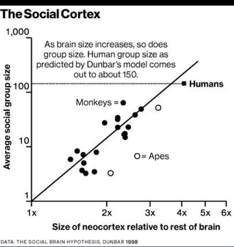
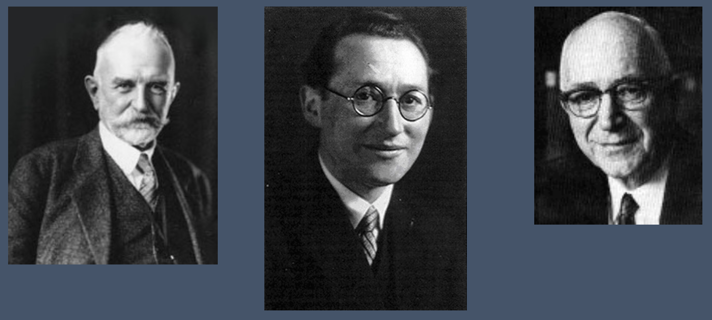
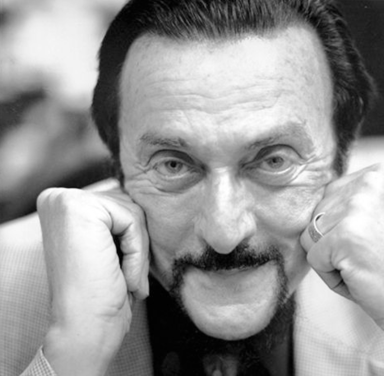
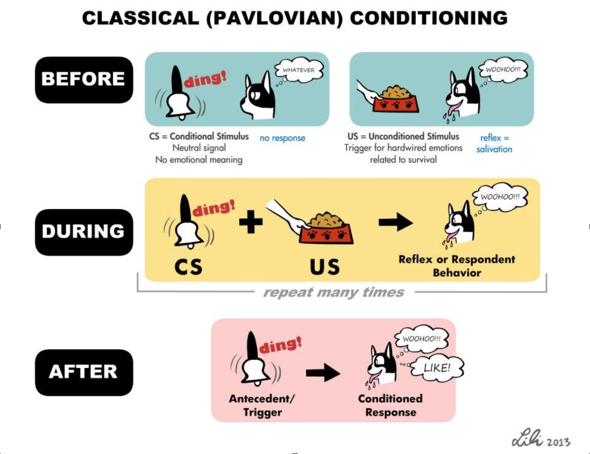
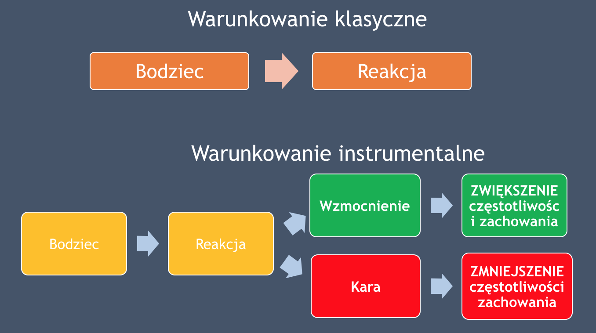
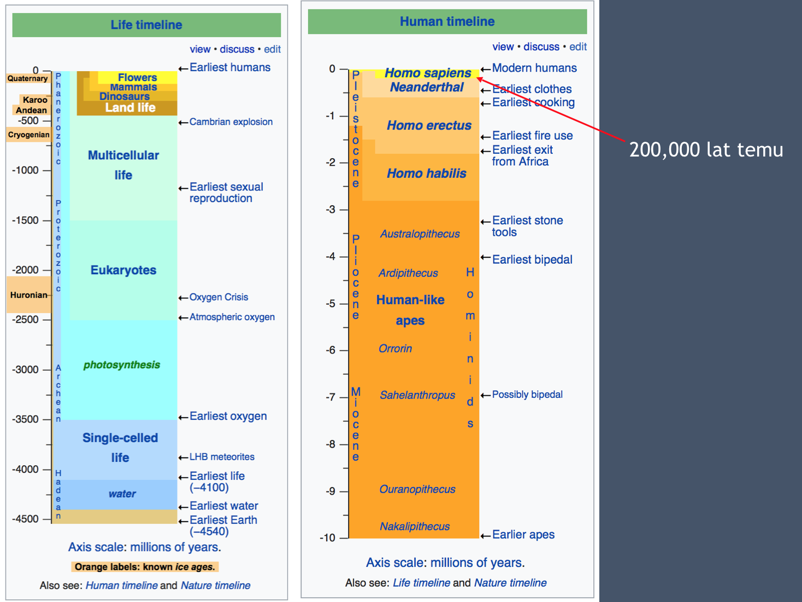

W jaki sposób to, co robią, czują i myślą jedni ludzi wpływa na to co robią, czują i myślą inni ludzie (za: Wojciszke, 2011)
Nie ma jednej, ogólnej teorii psychologii społecznej. Psychologia społeczna składa się z wielu teorii małego i średniego zasięgu





